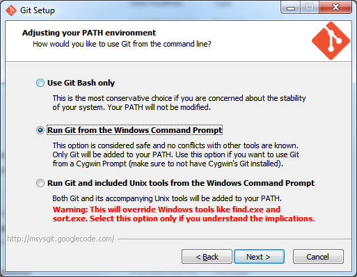

All Nornir packages share some common install requirements. These should be met before attempting installation of any particular package.
These instructions were written for PC users. Nornir depends upong the NCR Toolset which latest version has only been compiled for the PC. Nornir’s aim is to replace those tools with Python implementations. At that point Nornir will be platform independent. Mac users should not have trouble if they have a working Mac Ports installation.
Use the latest 64-bit versions for Python and all other dependencies unless specified otherwise.
The latest version of 64-bit Python 2.7.X (http://python.org/) should be installed first followed by these packages:
Windows users can locate many pre-built installers at the excellent site maintained by Christoph Gohlke. Mac users can utilize mac ports to install many
Any git client that lives in your system path will do. git is required by Nornir Python setup scripts.
A good option is to install git from git-scm_. During installation of the client one _must_ select the option to add git to the windows path
If installed correctly one can open a command prompt, type “git”, and have some usage information returned.
Circa 2013 the PIP installer appears to detect earlier versions of these libraries even if later versions are installed. This results in downloading and building the libraries which fails if the machine does not have a build environment working for those tools. It is best to delete old versions of Numpy/Scipy/Matplotlib from the Python27/lib/site-packages directory when upgrading to later versions.
One can test that the installation is functional by downloading the test data. This currently 6.7 GB so it is not a quick download. Extract the data to a folder, for this example I will use C:srcgitnornirtestdata.
Once downloaded two environment variables must be set. TESTINPUTPATH and TESTOUTPUTPATH, for one time use this can be done from the command line:
set TESTINPUTPATH=C:\src\git\nornir\testdata
set TESTOUTPUTPATH=C:\temp
If one wants to use Viking to examine test volumes after they are built, the TESTHOST environment variable can be set. You configure your webserver such that the TESTOUTPUTPATH is visible at the URL provided for TESTHOST.
set TESTHOST=http://localhost/NornirTestOutput
From the nornir-buildmanager directory one can now test the installation by typing:
python setup.py test
This should run all of the nornir tests and report if they were successful. Test output is visible in the directory specified by TESTOUTPUTPATH.